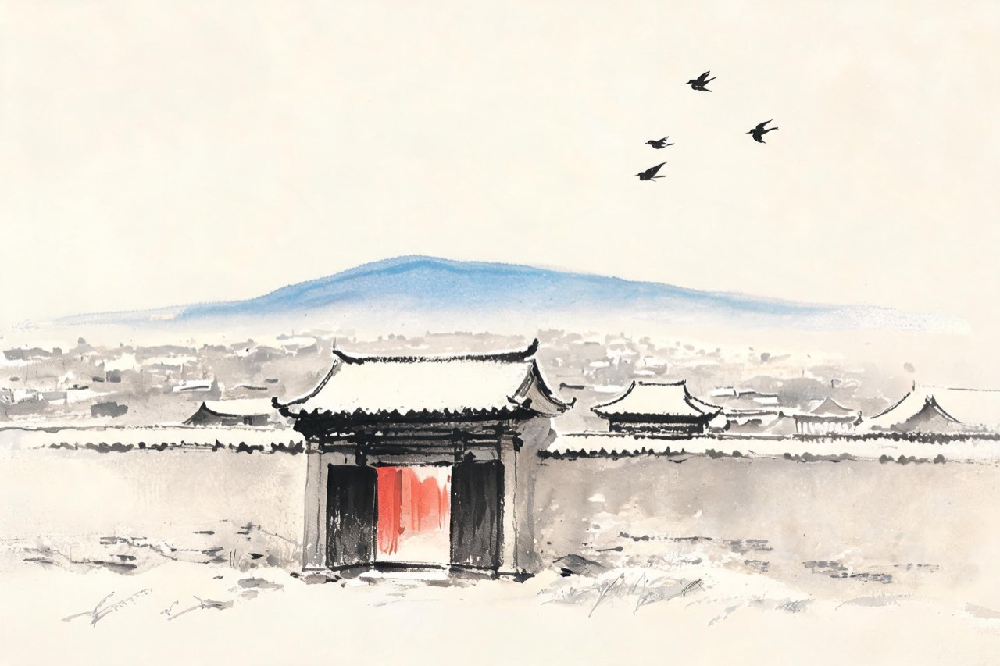
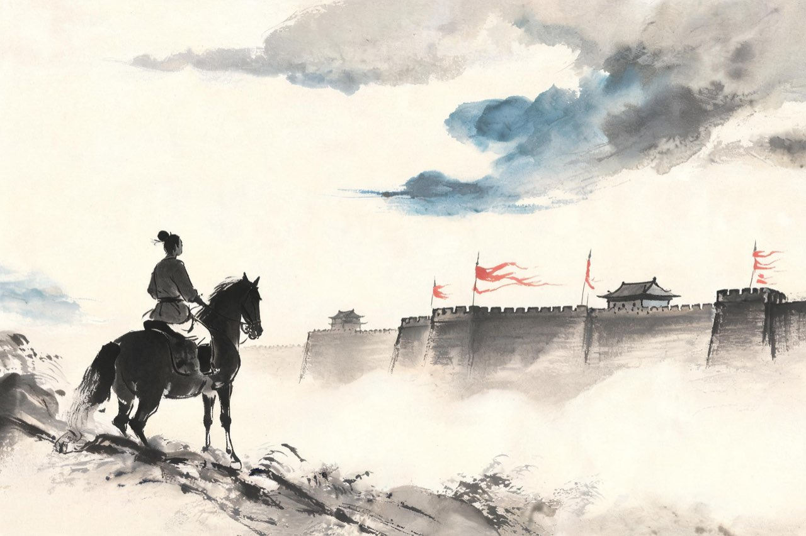
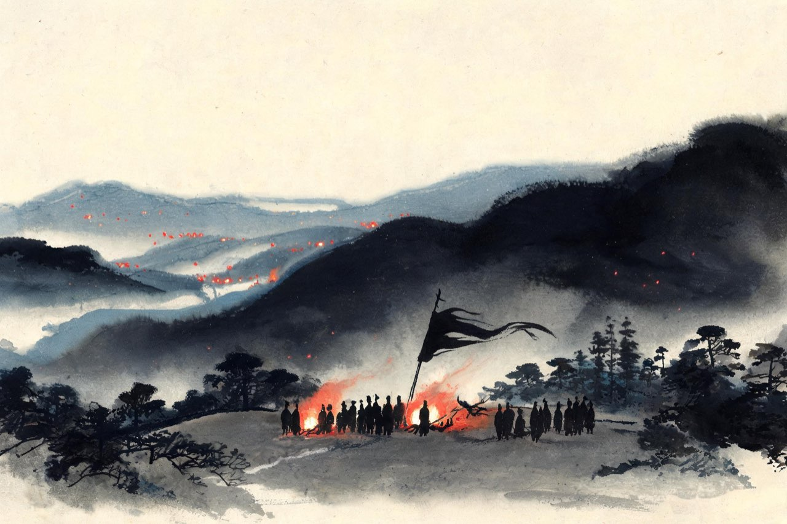

辛弃疾 · 1140-1161
齐鲁
沦陷区的少年

生于历城
绍兴十年五月，你生于山东历城四风闸。
那一年，岳家军北伐到朱仙镇，离你的家乡只有数百里。然后是十二道金牌，是风波亭。等你睁开眼认识这个世界，靖康之变已经过去十三年，山东是金人的土地，你生下来就是金的子民——纸面上如此。
你没有见过父亲。他叫辛文郁，在你很小的时候就去世了，抚养你的是祖父辛赞。祖父在金人手下做官，一家老小在沦陷区里讨生活。这几行字说来平常，其中分寸，只有活在那个时代的人自己知道。
你还不知道，这个在金人治下出生的孩子，此后一生都会用刀剑和笔墨回答同一个问题：你是谁的人。
注
- 生年绍兴十年（1140），五月十一日，史有明文；父辛文郁早卒、祖父辛赞抚育，从邓谱
- 辛赞仕金历任宿、亳等州守令——其为家族生计而出仕、心怀宋室的处境为推断，属演绎
山河课
祖父每次从任上回来，都带着你登高。
站在历城郊外的山冈上，他指点远处的山川关口：那是哪里，可以屯兵；那条河道，可以运粮；金人的粮道从哪条线上走。他讲得极认真，像一个将军在给幕僚布置方略——而听讲的，是一个几岁的孩子。
很多年后，你在奏疏里写下这几课的原话：大父臣赞……每退食，辄引臣辈登高望远，指画山河，思投衅而起。
登高望远，指画山河。一个仕金的官员，把复国的地图，一寸一寸描进孙儿的记忆里。这不是课业，是托付。
注
- 「每退食，辄引臣辈登高望远，指画山河，思投衅而起」——《美芹十论》序原文
- 发生地点：辛赞历任宿、亳等州，登高当在任所；地点置于历城故里（演绎），待校
- 年份约1147起（你七八岁），推定，待校
同窗
十来岁，你被送去从刘瞻读书，同窗里有一个叫党怀英的少年。你们年纪相仿、才名相当，乡里把你们并称——一个辛，一个党。
课业之余，你习剑、读兵书、论天下形势；党怀英为人沉静，写得一手好字。传说两人曾各自占卜前程：一个得坎卦，一个得离卦。坎在北，离在南——后来竟一一应验。
许多年后，党怀英成为金朝的文宗，碑版文字冠绝一时；而你南归宋朝，以词雄。同窗一场，各事一朝，各成一代之才。
命运在谯县的书斋里，就已经把两条路铺开了。
注
- 受学对象两说并存：《宋史·辛弃疾传》作「少师蔡伯坚」（蔡松年），另一系记载为亳州刘瞻（刘景玄之叔，见元好问文）——今从刘瞻说（时间、地点较合），待校
- 「辛党」并称、坎离占卜见《宋史》本传及谢枋得《宋辛稼轩先生墓记》（「公初卜得离卦」），属史传采录的传闻层，待校
- 习剑读兵书：正史无明文，据其日后武事逆推，演绎

燕山观势
十四岁，你第一次去燕京应试。十七岁，又去了一次。
乡试的路很远，出山东，过河北，直抵金人的中都。别人赴考，挑的是书箱；你的行囊里多了一份心思。后来你自己说，那两次北行，是「谛观形势」——认真地看。
看什么？看燕山的关隘，看黄河渡口的漕运，看金人兵马调动时粮道怎么走，看这座都城里蒙古、契丹、女真各色人等的神情。科举考的是文章，你额外交给自己一张考卷：山川地理、兵力虚实。
两次都没有考中。但你带回来的东西，比功名贵重——后来写进《美芹十论》里的金国虚实，起点就在这两次北行的路上。
注
- 「两随计吏抵燕山，谛观形势」——《美芹十论》自述
- 两次赴燕京应试，年份诸说不一，今取绍兴二十四年（1154）、二十七年（1157）一说，待核
- 计龄：依前一说按实岁为十四岁、十七岁；若按虚岁计则为十五岁、十八岁——两存，待校

二千人
绍兴三十一年，完颜亮撕毁和议，起大军六十万南侵。金人后方征敛苛急，中原沸腾，义军趁势而起：大山有耿京，太行有王友直，到处都是竖起来的旗。
二十二岁的你，在历城聚起两千人。
两千人在滚滚大势里算不得什么。你把他们带去投奔耿京——济南人，农民出身，一声令下能集合数万人。有人替你不平：两千人马，何必寄人篱下。你比谁都清楚：群盗蜂起而无统属，散则俱亡；要成事，就得有人挑头，有人归拢。
你在耿京帐下做掌书记，管文书印信。刀剑暂时交给了别人，你的战场才刚刚开始。
这是绍兴三十一年冬天。北风卷地，山东到处是火光。
注
- 聚众二千投耿京：出《美芹十论》总叙「臣尝鸠众二千，隶耿京为掌书记」；任掌书记：《宋史》本传有明文
- 完颜亮南侵兵力「六十万」为宋方记载概数，多为虚数
- 「群盗蜂起而无统属，散则俱亡」：概括其归耿京之考量，演绎，待校